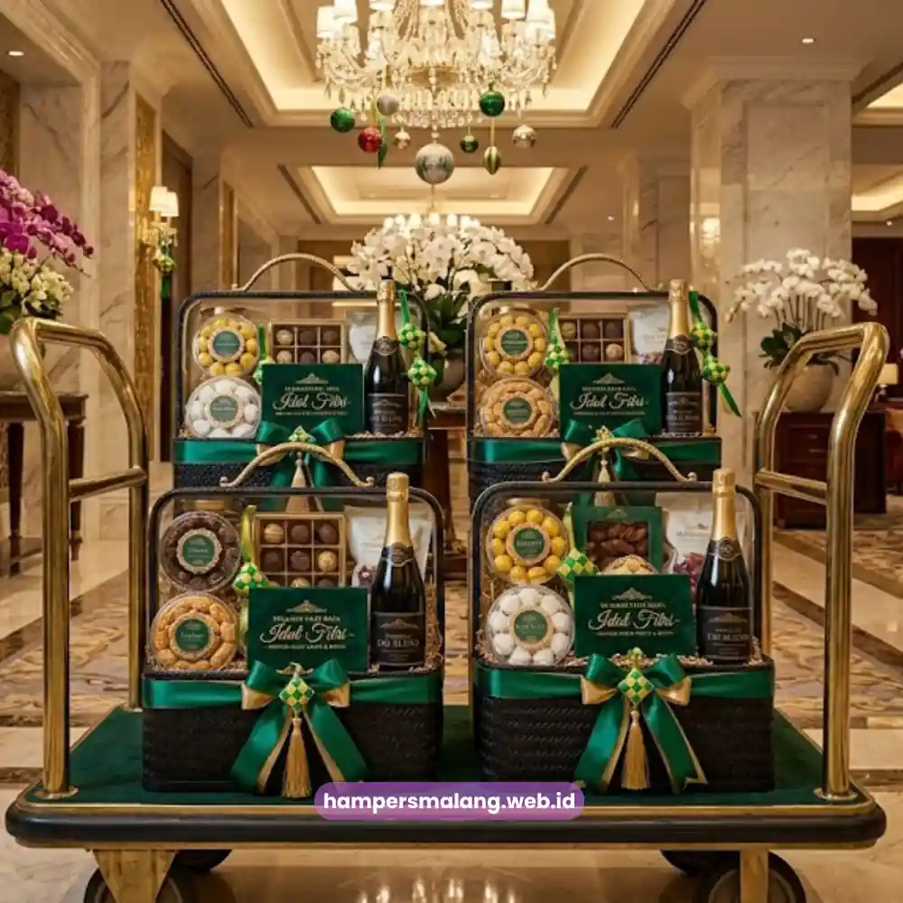

Hampers hari raya perusahaan adalah paket hadiah resmi yang dikirimkan perusahaan kepada karyawan, klien, atau mitra bisnis menjelang momen hari raya sebagai bentuk apresiasi.
Pemilihan isi, kemasan, dan waktu pengiriman hampers ini secara langsung memengaruhi kesan profesional perusahaan di mata penerima.
Artikel ini membahas rekomendasi hampers hari raya perusahaan yang tepat, mulai dari kriteria pemilihan hingga cara memesannya secara praktis.
- Hampers hari raya perusahaan berfungsi sebagai media apresiasi sekaligus alat menjaga relasi bisnis jangka panjang.
- Pemilihan isi hampers sebaiknya disesuaikan dengan profil penerima, apakah karyawan internal atau klien eksternal.
- Kemasan dan branding perusahaan pada hampers turut memperkuat citra profesional di mata penerima.
- Waktu pemesanan yang tepat, idealnya dua hingga empat minggu sebelum hari raya, menghindari keterlambatan pengiriman massal.
- Layanan pemesanan hampers korporat dari Hampers Malang menyediakan opsi kustomisasi untuk kebutuhan karyawan maupun klien sekaligus.
Apa Itu Hampers Hari Raya Perusahaan?
Hampers hari raya perusahaan adalah paket berisi kombinasi makanan, minuman, atau perlengkapan bernuansa hari raya yang dikemas secara khusus atas nama perusahaan.
Berbeda dengan hampers personal, hampers korporat umumnya dipesan dalam jumlah besar dan mengikuti standar kualitas serta tampilan yang seragam.
Tampilan yang seragam ini sangat penting untuk menjaga konsistensi citra perusahaan di mata semua penerima.
Menurut survei internal industri gifting korporat di Indonesia, sebagian besar perusahaan menganggarkan pengadaan hampers hari raya sebagai bagian dari program employee engagement tahunan.
Terutama pada periode Idul Fitri dan Natal, dua momentum hari raya tersebut memiliki volume permintaan gifting korporat tertinggi sepanjang tahun.
Primary entity dari topik ini, yaitu hampers hari raya perusahaan, mencakup dua kategori penerima utama, karyawan internal dan klien atau mitra eksternal.
Kedua kategori ini memiliki kebutuhan isi dan pendekatan yang berbeda meskipun tujuan akhirnya sama, yaitu memperkuat hubungan baik.
Mengapa Perusahaan Perlu Mengirimkan Hampers Hari Raya?
Pengiriman hampers hari raya bukan sekadar formalitas tahunan.
Bagi karyawan, hampers menjadi simbol pengakuan atas kontribusi mereka sepanjang tahun dan dapat meningkatkan rasa memiliki terhadap perusahaan.
Bagi klien atau mitra bisnis, hampers berfungsi sebagai penguat hubungan komersial yang menunjukkan bahwa perusahaan menghargai kerja sama yang telah terjalin.
Riset perilaku konsumen korporat menunjukkan bahwa perusahaan yang konsisten mengirimkan hadiah apresiasi pada momen tertentu cenderung memiliki tingkat retensi mitra bisnis yang lebih stabil.
Stabilitas retensi ini terlihat secara signifikan dibandingkan perusahaan yang tidak menerapkan program apresiasi rutin, berdasarkan data industri corporate gifting periode 2023-2025.
Selain aspek relasi, hampers hari raya perusahaan juga berperan sebagai media branding tidak langsung.
Logo perusahaan pada kemasan, kartu ucapan bertema korporat, hingga pemilihan warna kemasan yang senada dengan identitas visual perusahaan membuat hampers berfungsi ganda sebagai alat promosi yang halus.
Baca Juga: Ide Hampers Tahun Baru Perusahaan yang Paling Dicari
Bagaimana Cara Memilih Isi Hampers yang Tepat untuk Karyawan?
Isi hampers untuk karyawan sebaiknya mempertimbangkan kepraktisan dan nilai kebersamaan, bukan semata kemewahan.
Kombinasi makanan ringan premium, produk perawatan diri, atau perlengkapan rumah tangga bertema hari raya umumnya diterima baik.
Hal tersebut karena produk jenis itu bersifat fungsional dan dapat dinikmati bersama keluarga di rumah.
Perusahaan perlu memperhatikan keseragaman kualitas antar hampers karyawan agar tidak menimbulkan kesan perbedaan perlakuan.
Terutama pada perusahaan dengan jumlah karyawan besar lintas divisi dan jenjang jabatan, konsistensi ini penting untuk menjaga persepsi keadilan internal.
Sentuhan personalisasi sederhana seperti kartu ucapan dengan nama penerima atau nama divisi dapat meningkatkan kesan hangat tanpa menambah biaya produksi secara signifikan.

Apa Perbedaan Hampers untuk Klien Dibandingkan Karyawan?
Hampers untuk klien umumnya membutuhkan tampilan yang lebih premium dan formal dibandingkan hampers karyawan.
Fungsinya sebagai representasi citra perusahaan di hadapan pihak eksternal, membuat pemilihan kemasan, kualitas produk, dan detail presentasi menjadi perhatian utama.
Selain itu, pengiriman hampers klien sering kali disertai dengan surat ucapan resmi dari manajemen atau pimpinan perusahaan.
Pendekatan ini jelas berbeda dengan hampers karyawan yang cenderung menggunakan kartu ucapan bernuansa lebih santai dan personal.
Segmentasi penerima klien berdasarkan nilai kerja sama bisnis juga lazim diterapkan oleh banyak perusahaan berskala menengah ke atas.
Klien strategis menerima hampers dengan tingkatan lebih eksklusif dibandingkan klien reguler, tanpa mengurangi kualitas dasar yang diterima seluruh penerima.
Faktor Apa Saja yang Memengaruhi Kualitas Hampers Hari Raya Perusahaan?
Kualitas hampers hari raya perusahaan ditentukan oleh kombinasi antara isi produk, kualitas kemasan, dan ketepatan waktu pengiriman.
Ketiga faktor ini saling terkait erat dan menentukan kesan akhir yang diterima oleh si penerima.
Produk di dalam hampers sebaiknya memiliki masa simpan yang memadai untuk menjamin keamanannya.
Mengingat momen hari raya sering kali melibatkan mobilitas tinggi dan waktu konsumsi yang tidak selalu langsung dilakukan pada hari H.
Kemasan yang kokoh turut menjaga kondisi produk agar tetap baik selama proses pengiriman dalam jumlah besar.
Ketepatan waktu pengiriman menjadi faktor krusial karena keterlambatan pada momen hari raya dapat mengurangi nilai apresiasi yang ingin disampaikan.
Keterlambatan bahkan berpotensi besar menimbulkan kesan kurang profesional di mata klien penting Anda.
Apa Saja Kesalahan Umum dalam Pengadaan Hampers Perusahaan?
Kesalahan paling umum adalah pemesanan yang terlalu mendekati hari raya.
Hal ini dapat menyebabkan keterlambatan produksi atau pengiriman akibat lonjakan permintaan musiman di seluruh penyedia hampers.
Oleh sebab itu, perencanaan yang matang minimal beberapa minggu sebelumnya sangat disarankan untuk diamankan sejak awal.
Kesalahan lain adalah kurangnya standarisasi isi hampers antar penerima dalam kategori yang sama.
Dampak dari hal ini dapat menimbulkan kesenjangan persepsi baik di internal karyawan maupun di antara klien bisnis.
Selain itu, banyak perusahaan mengabaikan aspek branding pada kemasan yang dipilih.
Padahal, elemen branding ini merupakan peluang promosi yang sangat bernilai tanpa memerlukan biaya tambahan besar.
Tips Memastikan Hampers Hari Raya Perusahaan Berkesan
Perusahaan disarankan menentukan anggaran dan segmentasi penerima sejak awal agar proses kurasi isi hampers lebih terarah.
Melibatkan tim internal, seperti divisi HR atau marketing, dalam proses seleksi produk juga membantu memastikan hampers relevan dengan budaya perusahaan.
Menambahkan elemen custom seperti logo, warna korporat, atau pesan khusus pada kartu ucapan memberikan sentuhan personal.
Sentuhan ini dengan cepat membedakan hampers perusahaan dari hampers generik yang mudah ditemukan di pasaran.
Pemesanan lebih awal melalui penyedia hampers korporat berpengalaman turut memastikan kualitas dan ketepatan waktu tetap terjaga.
Bagi perusahaan yang ingin memastikan seluruh proses berjalan lancar tanpa harus mengurus detail teknis secara mandiri, memesan melalui Hampers Malang menjadi pilihan yang efisien.
Hampers Malang menyediakan layanan kurasi isi hampers, kustomisasi kemasan berlogo perusahaan, hingga pengiriman massal terjadwal untuk kebutuhan karyawan maupun klien sekaligus.
Hampers hari raya perusahaan yang direncanakan dengan matang mampu memperkuat hubungan dengan karyawan dan klien sekaligus membangun citra profesional perusahaan.
Perhatikan segmentasi penerima, kualitas isi, kemasan berbranding, dan ketepatan waktu pengiriman sebagai empat pilar utama keberhasilan program hampers tahunan Anda.
Segera konsultasikan kebutuhan hampers hari raya perusahaan Anda bersama Hampers Malang agar seluruh proses, dari kurasi hingga pengiriman, berjalan tepat waktu dan sesuai anggaran.
Tanya Jawab Seputar Hampers Hari Raya Perusahaan
Idealnya pemesanan dilakukan dua hingga empat minggu sebelum hari raya untuk menghindari antrean produksi akibat lonjakan permintaan musiman.
Sebaiknya berbeda, karena hampers klien umumnya membutuhkan tampilan lebih premium dan formal dibandingkan hampers karyawan yang lebih menekankan kepraktisan.
Bisa. Sebagian besar penyedia hampers korporat, termasuk Hampers Malang, menyediakan opsi kustomisasi kemasan dan kartu ucapan berlogo perusahaan.
Pilih penyedia dengan sistem produksi dan pengemasan yang konsisten, serta pastikan jadwal pengiriman diatur bertahap untuk menghindari penumpukan pada satu waktu.
Ketentuan minimum pemesanan bervariasi tergantung penyedia dan jenis paket yang dipilih, sehingga sebaiknya dikonfirmasi langsung saat konsultasi kebutuhan.

Butuh Hampers Perusahaan?
Solusi Hampers & Corporate Gift Kreatif di Jawa Timur.
Ditulis oleh Tim Maroon Souvenir
Sahabat mahasiswa dan pelaku bisnis di Malang Raya. Berpengalaman menangani merchandise event kampus, instansi pemerintahan, dan hotel berbintang di Batu.